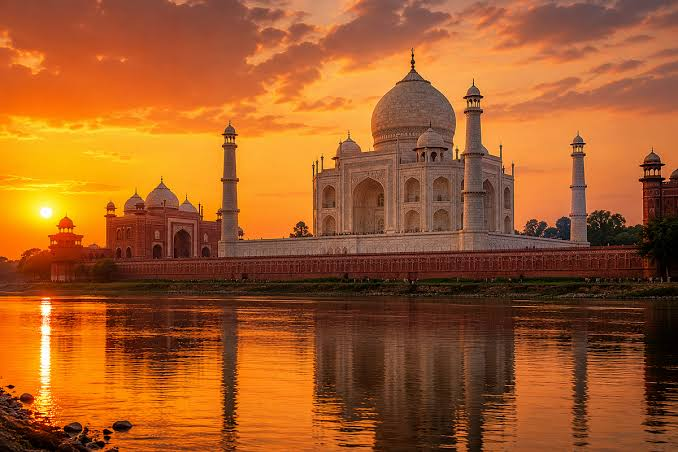
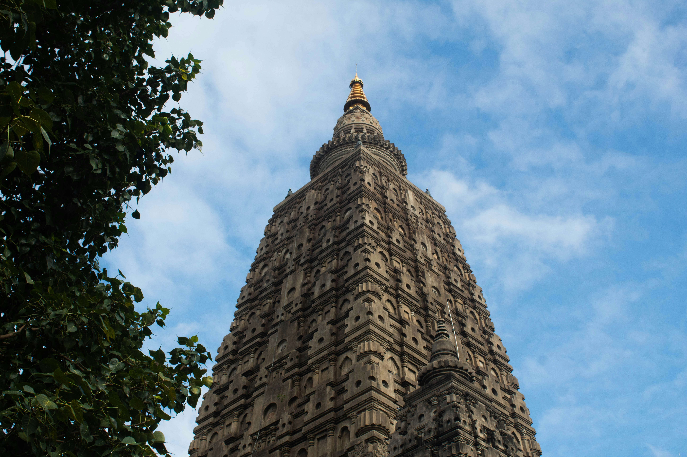
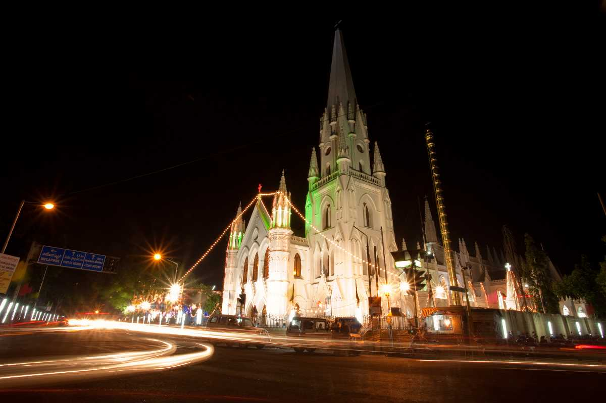

🌴
Beaches & Coast
Discover palm-fringed beaches, quiet coves and lively coastal towns. From the south coast to the east, find the perfect place to relax, swim, surf or simply enjoy the sunset.
SRI LANKA • OUTBOUND • EXPERIENCES
Discover Sri Lanka and explore the world through beautifully planned journeys, unforgettable experiences and moments worth remembering.
ABOUT PETALSKY
PetalSky Holidays is a Sri Lankan travel company creating meaningful journeys for travelers who want to experience the world beyond the ordinary.
From tropical beaches and misty mountains to international escapes, cultural experiences and unforgettable adventures, we help turn travel ideas into carefully planned journeys.
DISCOVER SRI LANKA
From golden beaches and mist-covered mountains to ancient kingdoms, sacred temples and wild national parks, Sri Lanka offers an incredible variety of experiences within one beautiful island.
Sri Lanka is a destination where every journey can feel completely different. Spend your morning exploring an ancient city, watch elephants in the wild in the afternoon and end the day beside a tropical beach.
Discover palm-fringed beaches, quiet coves and lively coastal towns. From the south coast to the east, find the perfect place to relax, swim, surf or simply enjoy the sunset.
Travel into the cool highlands of Sri Lanka. Explore tea plantations, misty mountains, waterfalls and charming towns surrounded by some of the island's most beautiful scenery.
Experience Sri Lanka's incredible wildlife. Go on safari to see elephants, wild leopards, colourful birds and other species in their natural habitats.
Step into Sri Lanka's fascinating past through ancient cities, remarkable ruins, royal kingdoms and UNESCO-listed heritage sites.
Experience centuries-old traditions, Buddhist temples, colourful festivals and sacred places while discovering the warmth of Sri Lankan culture.
Discover the flavours of Sri Lanka through aromatic curries, fresh seafood, tropical fruits, street food and authentic local dining experiences.
Add a little adventure to your journey with hiking, surfing, rafting, scenic train rides, cycling and unforgettable outdoor experiences.
Create unforgettable moments with private getaways, beautiful stays, sunset experiences and peaceful escapes designed for couples.
SAMPLE JOURNEYS
Whether you have a week or two weeks to explore, choose from our sample journeys below. Click on an itinerary card to explore the complete day-by-day journey.
A compact journey covering Colombo, ancient heritage, hill country, wildlife and the southern coast — ideal for first-time visitors.
A relaxed island experience combining Colombo, cultural heritage, tea country, mountains, wildlife and beautiful southern beaches.
Take your time discovering Colombo, ancient cities, cultural landmarks, mountains, wildlife, beaches and the historic southern coast.
LOOKING FOR SOMETHING DIFFERENT?
Tell us how many days you have, what you love to experience and how you want to travel. We'll help create a journey around you.
Create My JourneyGO BEYOND SRI LANKA
From spiritual journeys and cultural discoveries to tropical escapes and vibrant city experiences, explore the world beyond the island with PetalSky Holidays.
We help you plan international journeys that match your travel style, interests and budget — from meaningful pilgrimages to relaxing escapes and exciting city adventures.
Plan an outbound journey →
Delhi • Agra • JaipurExplore India's iconic Golden Triangle, where grand monuments, royal heritage and vibrant culture come together. Discover the Taj Mahal, majestic forts, colourful markets and the timeless charm of Delhi, Agra and Jaipur.

BiharJourney through the sacred heart of Buddhism. Visit Bodh Gaya, where Buddha attained enlightenment, along with other important Buddhist sites and monasteries across Bihar — a deeply spiritual experience for pilgrims and seekers.
 Kerala
Kerala
Experience Kerala's lush landscapes, peaceful backwaters and rich culture. Cruise through serene waterways, explore charming towns and enjoy the warmth of South India at its most beautiful.

ChennaiShop, explore and experience the vibrant energy of Chennai. From traditional markets and South Indian crafts to modern shopping destinations, enjoy a perfect blend of retail therapy, culture and city life.
OUR SERVICES
From the first travel idea to the moment you return home, PetalSky Holidays can help you organize the essential details of your journey.
Assistance with eVisa applications and travel requirements for popular destinations.
India • Vietnam • Thailand • Malaysia • IndonesiaDomestic and international flight bookings, fare options and itinerary planning.
Customized inbound and outbound packages, including transport, hotels and activities.
Hotels, resorts, villas and guesthouses based on the traveler's budget and preferences.
Airport pickup and drop-off, private vehicles, chauffeurs and transportation during tours.
Personalized itineraries based on duration, budget, interests and travel style.
Help choosing destinations, routes, experiences and the best way to organize your trip.
NOT SURE WHERE TO START?
WHY PETALSKY
Trips designed around your interests, time and travel style.
Thoughtful recommendations that help you experience destinations authentically.
We coordinate the details so you can focus on enjoying the journey.
LET'S PLAN
Tell us what kind of journey you have in mind and we'll help you shape it.